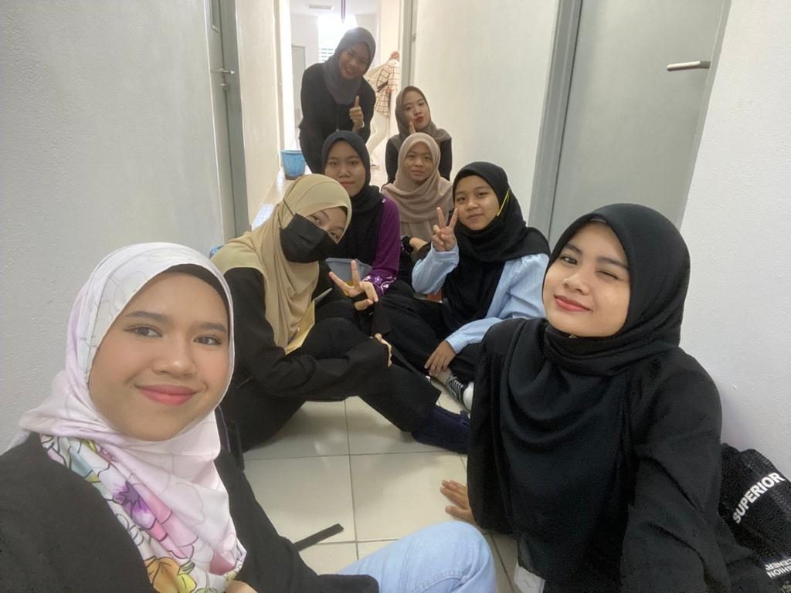

|
Now, I attend UiTM Rembau as a final-year diploma student. I've rented house with three other classmates as a result. Lastly, for me, living with a classmate can provide an opportunity to build a strong friendship. Engage in activities together, explore new living environment, and create positive memories that go beyond the academic setting. There is just one room and one bathroom in the tiny rental home. However, it is cozy enough for the four of us. My housemate is very kind and generous to each other. Besides, the landlord rented is an elderly aunt. We called her "mommy radz". She is an incredibly giving and lovely person. She always gives food for us practically every day. Every semester, she also always takes the four of us on short vacation. She has a son who lives in Kuala Lumpur. His son is courteous and attentive. We also once stay in her house in Kuala Lumpur for 2 nights. I feel like we're treated as her own child as she also introduce us as her children to her friends. We feel very at ease with both of them. May Allah bless their family.
| Photos with them📸 |
|---|
On top of that, I have a classmate that is very sporting. We Shares a close and supportive relationship with each other. My classmate also brings joy and laughter into my life. They make me feel good about myself and help me create lasting memories in university. For me, my friend is someone who makes life more meaningful and fulfilling, a valuable companion on the journey of life. As we share experiences, discuss ideas, and collaborate on academic projects, developing relationships with classmates can create a friendly and beneficial learning environment. Beside, for me, university life can be challenging, and having supportive classmates can contribute to overall well-being. Sharing common experiences and forming friendships with peers can provide a sense of belonging and make university experience more enjoyable.
| Photos together📸 |  |
|---|